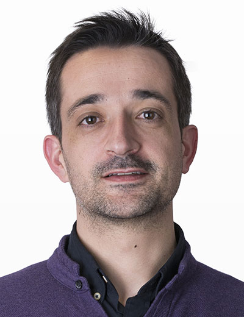
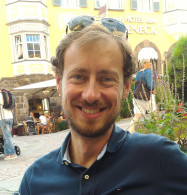
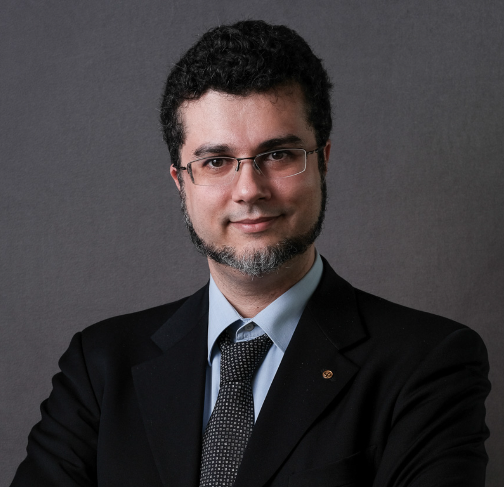

Invited Speakers
Laurie Williams is a Distinguished University Professor in the Computer Science Department of the College of Engineering at North Carolina State University (NCSU). Laurie is the director of the NSF-sponsored Secure Software Supply Chain Center (S3C2), and co-director of the NCSU Science of Security Lablet sponsored by the National Security Agency, the NCSU Secure Computing Institute, and the North Carolina Partnership for Cybersecurity Excellence (NC-PaCE). Laurie's research focuses on software security, software process, and empirical software engineering.
Session Title: Software Supply Chain Security
Abstract: Software organizations largely did not anticipate how the software supply chain would become a deliberate attack vector. The software industry has moved from passive adversaries finding and exploiting vulnerabilities
contributed by well-intentioned developers, such as log4j, to a new generation of software supply chain attacks, where attackers also aggressively implant vulnerabilities directly into dependencies (e.g., the protestware of node-ipc). Adversaries
also find their way into builds and deployments, such as occurred with SolarWinds, to deploy rogue software. Once implanted, these vulnerabilities become an efficient attack vector for adversaries to gain leverage at scale by exploiting the
software supply chain. Software supply chain attacks have had over a 700% increase year-by-year over the last three years. A US Executive Order on Cybersecurity in May 2021 specifically calls out software supply chain security. Other
countries and the European Union are working on similar legislation.
Plummeting trust in the software supply chain may decelerate digital innovation in every domain. Taking back control and restoring trust in the software supply chains is an “all hands on deck” endeavor – from lawyers to software developers
to system operators. This talk will explore lessons learned, practical steps forward, and the practices needed in the journey toward restoring trust in the software supply chain. Technical practices include detecting malicious software
commits, producing and consuming a Software Bill of Materials (SBOM), securing development toolchains, code signing, and producing and consuming provenance data for components.
Slides - Part 2
Slides - Part 3
Prof. Rui Abreu holds a Ph.D. in Computer Science - Software Engineering from the Delft University of Technology, The Netherlands, and a M.Sc. in Computer and Systems Engineering from the University of Minho, Portugal. His research revolves around developer productivity and software quality, with emphasis in automating the testing and debugging phases of the software development life-cycle as well as self-adaptation. Dr. Abreu has extensive expertise in both static and dynamic analysis algorithms for improving software quality. He is the recipient of 6 Best Paper Awards, including a Distinguished Paper Award at ESEC/FSE 2019, and his work has attracted considerable attention. Before joining FEUP as a Full Professor, he was an Associate Professor at IST, ULisbon and a member of the Model-Based Reasoning group at PARC’s System and Sciences Laboratory and an Assistant Professor at the University of Porto. He has co-founded DashDash in January 2017, a platform to create web apps using only spreadsheet skills. The company has secured $9M in Series A funding in May 2018. He was a Visiting Researcher at Google NYC between 2019 and 2020, working on building systems and tools to increase the security of C/C++ codebases. He is currently a Research Software Engineer at Meta.
Session Title: On Making Software More Secure
Abstract: In today’s world, where most companies are producing software to differentiate themselves, the pace of development has never been so important, and waiting to address software security vulnerabilities after completing development - as traditional pipelines would do - can be costly and introduce unnecessary risks. Static analysis is a powerful technique to detect issues early on the software development lifecycle (SDLC) - and shift security left - to decrease the costs associated with maintainable security since the technique can examine entire codebases without the need to compile and execute the code, i.e., it can be applied during the development phase. However, the scope of static analysis tools in security, or Static Application Security Testing (SAST) tools, is vast and still difficult to understand since there is no structured way to classify, organize and compare these tools on different characteristics (e.g., techniques, programming languages, weakness spectra, performance, etc.) - which hinders the users’ trust and adoption. Building well-structured, real-world-based, and large datasets for testing those tools properly and fairly - to build users’ trust - is still challenging because of the lack of precise mining approaches and well-documented information. Better datasets are not only important for testing SAST tools but also for providing a ground truth to AI models to improve SAST tools with risk analysis, alert prioritization, and better representation of the issues found.
Slides
Mariano Ceccato is associate professor in the Computer Science department in University of
Verona, Italy. He was principal investigator of several competitive publicly funded research projects and several industrial funded projects. He was recently visiting research scientist in the Software Verification and Validation Laboratory
led by Lionel Briand, University of Luxembourg.
Mariano received the Best Paper Award in ICPC-2017, ICST-2022 and ICST-2020; and Distinguished Paper Award in ICPC-2017 and ASE-2016. He is author or coauthor of more than 90 research papers published in international journals and
conferences/workshops, including top venues (e.g., IEEE-TSE, ACM-TOSEM, EMSE, ICSE, ASE). His research interests include software testing, security testing, code hardening and empirical studies.
Session Title: Security Testing of Mass Assignment Vulnerabilities in RESTful APIs
Abstract: RESTful APIs (or REST APIs for short) are becoming the standard technology to access web-oriented resources and to interconnect software systems across the public Internet. They operate on the web using
the HTTP protocol, typically exchanging JSON payloads, and for this reason they are also known as Web APIs. Considering their dominant responsibility as cornerstone integration technology to interconnect different computer systems,
it is crucial to reveal defects and vulnerabilities in their implementation as soon as possible. In fact, the security of the overall integrated system builds on top of the security and reliability of the atomic REST APIs that take
part to the composition.
In this talk, I will present a security testing approach to automatically detect and test mass assignment vulnerabilities. Mass assignment is one of the most prominent vulnerabilities in RESTful APIs. This vulnerability originates
from a misconfiguration in common web frameworks, such that naming convention and automatic binding can be exploited by an attacker to craft malicious requests writing confidential resources and (massively) overriding data, that should
be read-only and/or confidential.
This approach has been implemented and evaluated on a set of case studies written in different programming languages. The evaluation highlights that the approach is quite effective in detecting seeded vulnerabilities, with a
remarkably high accuracy.
Slides - part 2
Stefano Zanero received a PhD in Computer Engineering from Politecnico di Milano, where he
is currently a full professor with the Dipartimento di Elettronica, Informazione e Bioingegneria. His research focuses on malware analysis, cyberphysical security, and cybersecurity in general. Besides teaching “Computer Security” and
“Digital Forensics and Cybercrime” at Politecnico, he has an extensive speaking and training experience in Italy and abroad.
He co-authored over 100 scientific papers and books. He is a Senior Member of the IEEE and the IEEE Computer Society, which has named him a Distinguished Lecturer and Distinguished Contributor; he is a lifetime senior member of the
ACM, which has named him a Distinguished Speaker; and has been named a Fellow of the ISSA (Information System Security Association). Stefano is also a co-founder and chairman of Secure Network, a leading cybersecurity assessment firm,
and a co-founder of BankSealer, a startup in the FinTech sector that addresses fraud detection through machine learning techniques
Session Title: When software vulns got real: security of cyber-physical systems.
Abstract: Cyber-physical systems and their security vulnerabilities are attracting a lot of attention: attacks on connected cars received a lot of media exposure, as did attacks on industrial control systems, airplanes or medical devices. A lot of this interest is driven by vulnerability research (often in the form of “stunt hacking”). While engaging and attractive, does this research really help to answer the fundamental question of how to embed security analysis in design? Why are we failing? What are the root causes, with a look at software engineering in embedded systems? Throughout this lecture we will try to answer these questions, with a few hands-on examples.
Slides - part 1Slides - part 2